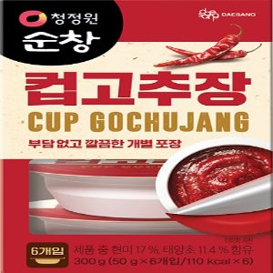
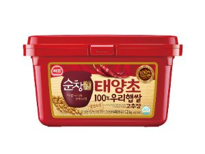

에 쿠팡 화면에서 사람이 직접 확인한 가격이에요. 쿠팡에 똑같은 크기가 없어서 용량을 맞춰 계산했어요 (청정원순창 태양초 찰고추장, 200g, 1개 3,000원 → 50g*6).
PX에서 사면 7,010원 아껴요.
PX 조미료·장류 71가지 중에 2번째로 많이 아끼는 물건이에요.
조미료·장류 10개 중 9개는 PX가 더 저렴해요.
쿠팡에 똑같은 크기가 없어서 용량을 맞춰 계산한 가격이에요.
| 상품명 | 대상 순창 컵고추장 50g*6 |
| 제조사 | 대상(주) |
| 규격 | 50g*6 |
| 분류 | 식품 · 조미료·장류 |
| 군마트 판매가 | 4,110원 |
| 쿠팡 낱개가 | 11,120원 |
| 확인한 날 | |
| 쿠팡 리뷰수 | 339 |
PX에서 살 물건 고르는 중이라면
더 이상 직접 비교하지 마세요.
군마트 상품을 한곳에 모아 PX 가격과 온라인 가격을 쉽게 비교할 수 있습니다.

이렇게 상품마다 PX 가격과 온라인 가격을 나란히 놓고 볼 수 있습니다.
ㄷㅌㅈ처럼 초성으로도 검색할 수 있어요.
국방가족 분들이 조금이라도 편하게 군마트를 이용하셨으면 하는 마음으로 만들었습니다.
국방가족을 위한 작은 재능기부입니다.